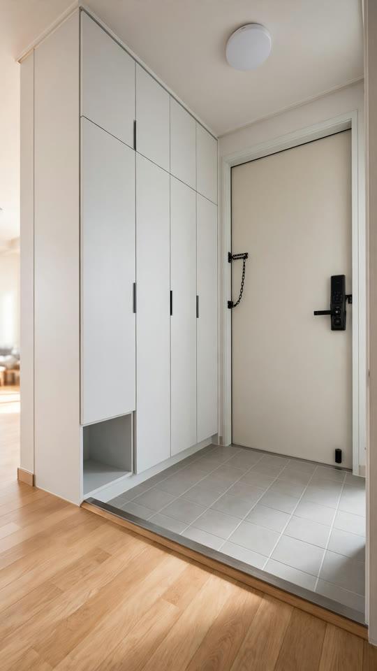
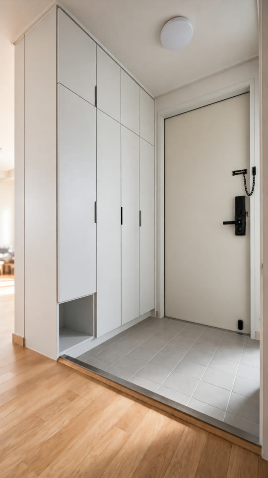

«아빠 왔다~» 편 — 대본·세트 확인
대표님 직접 소재(10-24). 흐름·대사는 원문 그대로, 마지막은 아빠 한마디. 5컷 약 20초 · 집 안 현관.
대본 5컷
- 도윤«엄마다! 까까 왔떠?»현관문 열리는 소리에 마루에서 타일 쪽으로 두 팔 벌리고 뛰어나온다
- 아빠«아빠 왔다~»문을 닫고 들어서며 환하게 웃고 두 팔을 살짝 벌린다
- 도윤«엄마가 아니네… 아빠가…»벌렸던 두 팔이 스르르 내려가고 입이 삐죽
- 도윤«엄마 까까 사온다 그랬는데… 엄마 업떠…»닫힌 현관문을 한 번 돌아보고 다시 아빠를 본다
- 아빠«회사 가서 다시 야근이나 해야겠다…»어깨가 축 처지며 숄더백을 다시 고쳐 멘다
의상: 도윤 연노랑 내복 상하의·맨발 / 아빠 하늘색 셔츠·네이비 바지·검은 숄더백. 엄마가 사 오기로 한 것 = «까까»(대본에서 정함).
세트 — 현관 체인 걸쇠 위치 수정

지금 정본: 걸쇠가 손잡이 반대쪽(경첩 쪽) — 10-04 대표님 지적(품질 장부 Q-20261004-23)

수정 후보(Codex 0원): 걸쇠만 손잡이·도어록 위로 옮김, 나머지 그대로
이번 편은 아빠가 문을 열고 들어오는 장면이라 문이 크게 잡힙니다. 승인해 주시면 후보로 정본을 바꾼 뒤 제작합니다.